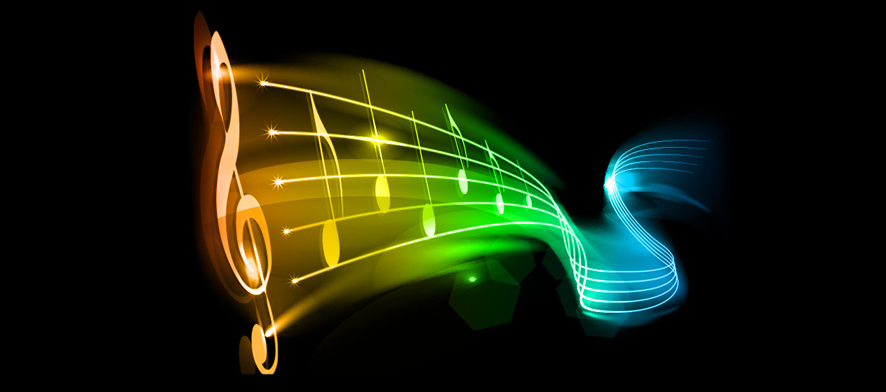

Bem-Vindo
Play:
Este site foi feito mais para falar um pouco sobre música
mesmo que ele não vá ao ar eu irei postar no meu perfil do
GitHub. Caso tenha achado este site por outro local e não pelo GitHub
deixarei minhas redes sociais no final do site para vocês conhecerem o criador do site

Música
Música é a combinação de ritmo, harmonia e melodia, de maneira agradável ao ouvido. No sentido amplo é a organização temporal de sons e silêncios (pausas). No sentido restrito, é a arte de coordenar e transmitir efeitos sonoros, harmoniosos e esteticamente válidos, podendo ser transmitida através da voz ou de instrumentos musicais.

Instrumentos
Destacarei alguns intrumentos que eu mais acho bonito e mais escuto no meu dia dia para falar um pouco sobre
Orgão

O órgão é um instrumento musical da família dos aerofones de teclas, tocado por meio de um ou mais manuais e uma pedaleira. O som é produzido pela passagem de ar comprimido através de tubos sonoros de diversos formatos, materiais e comprimentos
Quando surgiu o orgão?
O órgão é o instrumento de teclado mais antigo, cujas descrições de alguns engenheiros greco-romanos remontam sua criação por volta do século 3 a.C. Era chamado de órgão hidráulico e dependia da água, ativada por fontes naturais como uma cachoeira, para produzir e empurrar o ar comprimido para dentro dos tubos.
Porém o orgão que me refiro e vejo constantemente não é desses orgãos mais antigos de tubos, mais sim os com pedaleiras e etc...
Violino

O violino é um instrumento musical, classificado como Instrumento de cordas ou cordofone. Foi inventado por Gasparo de Salò, um italiano que viveu entre os anos 1540 e 1609. O termo "violino" foi introduzido na língua portuguesa no século XX. Até então, a designação do instrumento era rabeca, palavra que ainda se utiliza em muitos lugares.
Quando surgiu o violino?
É controverso determinar quem teria feito o primeiro violino, uma vez que ele é derivado de ao menos três outros instrumentos medievais – a viol, a rabec e a lira da braccio, mas é consenso entre os musicólogos que ele surgiu no norte da Itália, no começo do século XVI
Eu sou violinista em minha igreja e uso violino como um hobby mais sei que ele é muito mais que isso para mim.